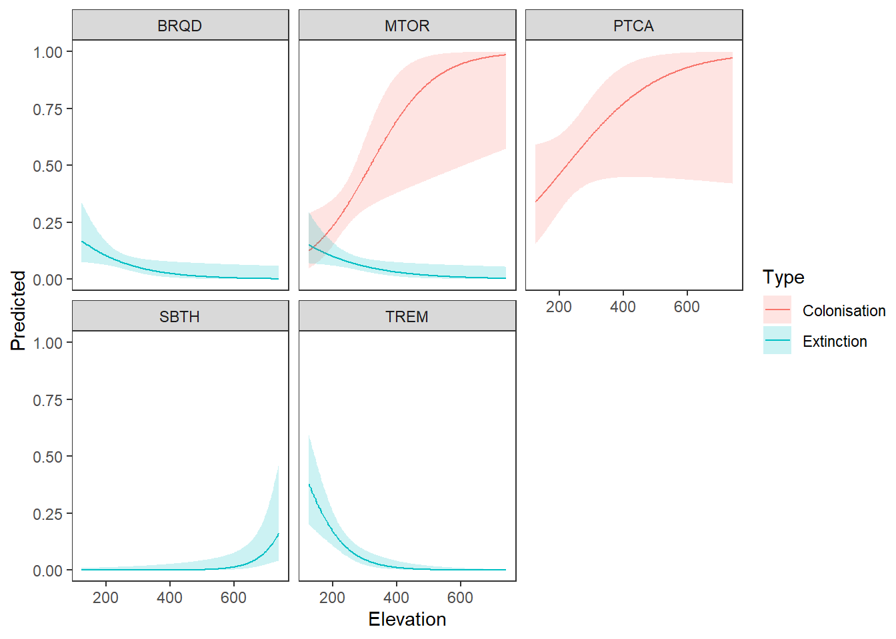

Results
Range Changes Montserrat studied by employing occupancy modelling
Results
Presence-absence point count data on 12 forest bird species on Montserrat was sampled over 13 years between 2011 and 2024. Consequently, we analysed 35 688 observations from 2 974 surveys using dynamic occupancy models that correct for imperfect detection, calculate colonization and extinction and provide the possibility to estimate yearly occupancy. We found evidence for elevational range changes in 8 out of the 12 species (Figure 2, Table 3), with three species (Antillean Crested Hummingbird, Bridled Quail-Dove, and Purple-Throated Carib) best explained by the ‘expansion’ model where colonization depended on elevation, 3 species (Forest Thrush, Pearly-Eyed Thrasher, and Scaly-Naped Pigeon) in which extinction was explained by elevation, and 2 species (Montserrat Oriole, and Scaly-Breasted Thrasher) in which both colonization and extinction were explained by elevation. For another 3 species (Caribbean Elaenia, Green-Throated Carib, and Brown Trembler) the most parsimonious model was the ‘year’ model where extinction and colonization probabilities were best explained by year, and for 1 species (Bananaquit) neither colonization nor extinction probability were explained by either elevation or year but were modelled as constant. The MB-GoF tests (n = 1000 simulations, Table 3) on the best models indicated c-hat values for all models below the rule-of thumb threshold of 3 to 4 (Kéry and Royle, 2020). However, all models showed overdispersion: For 4 species the overdispersion was negligible with c-hat values between 1.08 and 1.54 but for 8 species the overdispersion was higher with c-hat estimates from 1.70 to 2.78. Very low p-values indicate significant differences between simulated data from the model and observed data (Kéry and Royle, 2020). Thus, 8 models showed p-values below 0.05, indicating a lack-of-fit that may affect the validity of the models for inference.
[Add model selection table of the last modelling step here]
For the Forest Thrush and the Pearly-Eyed Thrasher the ‘contraction’ model (indicating changing extinction ε with elevation) and for the Scaly-Naped Pigeon the ‘shift’ model (indicating both changing colonization and extinction with elevation) were selected as the most parsimonious by AIC. However, their occupancies were constantly very high with means of 0.9932 (Forest Thrush), 0.9991 (Pearly-Eyed Thrasher), and 0.9759 (Scaly-Naped Pigeon). Given these high occupancies close to 1, the colonization of unoccupied sampling locations is not feasible and thus questions the meaningfulness of the ‘shift’ model for the Scaly-Naped Pigeon. Additionally, this dubiousness is reflected in enormous uncertainties of both the effect size and predicted colonization probabilities along elevation. Furthermore, both the Forest Thrush and Pearly-Eyed Thrasher showed, resulting from overall high occupancies, very low extinction across the whole elevational range with only minor increases at the upper elevational limit (where only few survey points are located) which is insufficient to facilitate a range change. Consequently, we conclude that it is not sensible to interpret the predictions from these models but rather base inference on the remaining 5 meaningful models where at least one of colonization or extinction probabilities were explained by elevation. Moreover, model selection uncertainty occurs in the most parsimonious models for 10 out of 12 analysed species including 4 out of 5 models which suggest elevational range changes. For these models ΔAIC lies within 2 AIC units and therefore the alternative models are not clearly distinguishable from the most parsimonious one (Burnham and Anderson, 2002).
[Include effect size table here]
For the Montserrat Oriole colonization increased with elevation from 0.1919 to 0.8215 and extinction decreased with elevation from 0.1144 to 0.0201 showing effect sizes of 0.7601 (0.95 CI: 0.1951, 1.3252) and -0.4725 (0.95 CI: -1.0855, 0.1405), respectively. Notably, the steepness of both colonization and extinction slopes was highest for low elevations but flattening towards higher elevations. The models for the Antillean Crested Hummingbird and Bridled Quail-Dove indicated decreasing colonization along elevation (ranging from 0.9990 - 0.5378 and 0.9765 - 0.4171) but small effect sizes of -1.7362 (0.95 CI: -4.4869, 1.0144), and -1.0416 (0.95 CI: -1.9473, -0.1359), respectively. Interestingly, for both species high colonization close to 1 decreased little in low elevations but dropped considerably towards higher elevations. Contrastingly, for the Purple-Throated Carib colonization generally increased with elevation spanning from 0.4059 to 0.8981 and the estimated effect size was 0.6556 (0.95 CI: -0.4704, 1.7816). The ‘contraction’ model for the Scaly-Naped Pigeon indicated an overall low extinction increasing from 0.0066 at the lower to 0.0989 at the upper elevational margin (effect size: 0.7196 (0.95 CI: 0.2633, 1.1760). All effect sizes were reported on the logit-scale.
[Add colext figure]
5 species showed very high mean occupancies mainly between 0.95 and 1 and narrow widths of the 0.95 confidence interval: The occupancy of the Pearly-Eyed Thrasher and Bananaquit were almost every year 1 (with means of 0.9991, respectively). Slightly lower occupancies were reported for the Scaly-Breasted Thrasher, Forest Thrush and Scaly-Naped Pigeon with means of 0.9844, 0.9932 and 0.9759, respectively. For 4 species mean occupancy lay between 0.85 and 0.95 but showed higher uncertainties. Namely these species were the Montserrat Oriole (0.8292), the Brown Trembler (0.9092), the Purple-Throated Carib (0.8883) and Antillean Crested Hummingbird (0.9407). The remaining 3 species, the Bridled Quail-Dove, Green-Throated Carib and Caribbean Elaenia, showed remarkable yearly variation and low precision in occupancy estimates resulting in means of 0.8720, 0.4755, 0.3325, respectively.
During the study period from 2011 to 2023, 8 species showed no clear trend in occupancy. But remarkable trends were observed in 4 species: Occupancies increased for the Montserrat Oriole by 14.04 %, and the Purple-Throated Carib by 26.24 %, whereas occupancies of the Green-Throated Carib dropped by 80.75 %, and Caribbean Elaenia by 97.26 %. Occupancy trajectories are shown in Figure 3 and yearly occupancies and means for all species can be accessed in the Appendix 3.
[Occupancy plot]

Running Code
When you click the Render button a document will be generated that includes both content and the output of embedded code. You can embed code like this:
[1] 2You can add options to executable code like this
[1] 4The echo: false option disables the printing of code (only output is displayed).